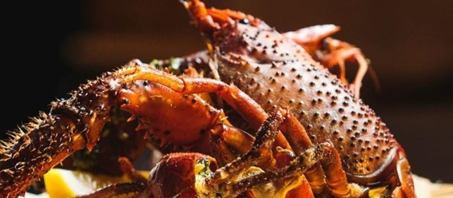
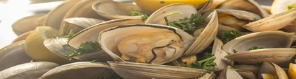
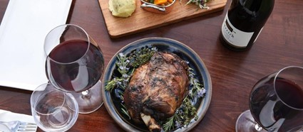
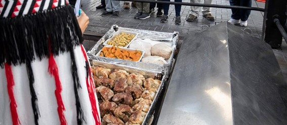
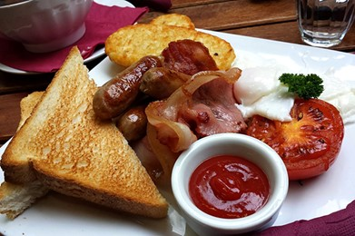
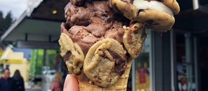

Altough New Zealand might seem like it doesnt have that much of a "food culture" besides of fish and chips, they are actually really proud of their "pacific culinary" that goes from cheeses to pretty unique sea food - since New Zealand is an island. With a lot of English influence due to its colonization, and also from Southeast Asia and India – the largest number of immigrants in the oceanic country –, New Zealand's cuisine is quite diverse. Sandwiches, soups, coffee and ice cream are the favorites of kiwis. Pies (tartlets that look more like giant pies) are very common in several regional restaurants, and we can find several dishes containing rice, as well as in Brazilian cuisine. And in the cafeterias, which are scattered all around, you can even find options for lunch, as it is not a rule to have a meal as complete as in Brazilian culture, even more so with a breakfast as rich as New Zealand. Dinners are usually served without drinks or with some wine from the country's various vineyards. CRABISH AND SEAFOOD  With over 14,000 kilometers of coastline, it's no wonder New Zealand is home to the best in the world. Known for its incredible crayfish, the small town of Kaikōura has ‘seafood caravans’ dotted along the coast. The most famous is Nin’s Bin, which is operated by a local family that has been selling crayfish since 1977. Creamy green lipped mussels can be found in Marlborough, especially in Havelock. And Mount Cook is known for its delicious royal salmon.  LAMB  Juicy and tender, roast lamb is a favorite of New Zealanders, is much appreciated around the world and is one of the country's biggest export meats. Best enjoyed with rosemary and served with plenty of roasted seasonal vegetables, roast lamb is a meal that is sure to impress. You'll find it on the menus of our top restaurants across the country. HĀNGĪ  Maori Hāngī is a traditional style of earth oven cooking. Now reserved primarily for special occasions, foods cooked in a hāngī include chicken, pork, and mutton, as well as squash, potatoes, and kumara (sweet potatoes). One of the best places to enjoy this cultural feast is Te Puia, in the center of the north island, where you can taste steamed food in Rotorua's geothermal system. You can also enjoy a delicious steamed hāngī pudding for dessert. BREAKFAST  The New Zealand breakfast is quite rich, and it is possible to miss lunch if you have a late breakfast. The traditional coffee is toasted with butter, jelly or marmite (a very bitter black pate), eggs, bacon, hashbrowns (a type of rectangular rostie potato), roasted tomatoes, accompanied by coffee or tea. Juices can also be included. CANDY, CHOCOLATE AND SWEETS  Ask a New Zealander what their favorite chocolates are and the answer will likely be Chocolate Whittakers. Individually packaged, Cookie Time Cookie is a line of cookies with different sizes and flavors such as triple chocolate, ginger and macadamia nut and white chocolate. Pineapple Lumps and Jaffa's are other New Zealand favorite lollies. Kiwis celebrate Jaffa every year when thousands of little Jaffas race down Baldwin St in Dunedin, said to be the steepest street in the world, as part of the annual Dunedin Cadbury Chocolate Carnival